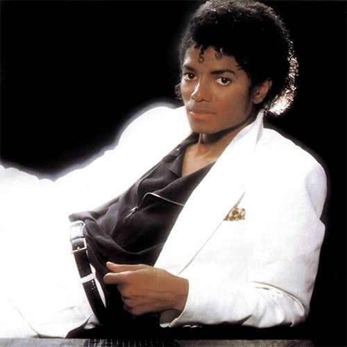

R&B (rhythm and blues) é um gênero musical que surgiu entre os anos de 1920 e 1930 no contexto afro-americana e tem uma mistura de jazz, blues, pop, rap, hip-hop, funk e soul. Uma de suas principais características são as batidas marcantes e ritmadas com melodias suaves. Seus principais artistas são: Aretha Franklin, Michael Jackson (com mistura do pop), Whitney Houston, Prince Rogers, Lionel Richie, Ray Charles, Stevie Wonder, entre outros.
Com a tecnologia, surgiu os sintetizadores o que mudou o estilo do gênero, tendo uma batida mais cativante, podemos observar isso nas músicas de Michael Jackson e Prince Rogers que fizeram bastante sucesso nos anos 80. A partir daí, outros artistas começaram a surgir, e incorporaram a tecnologia com o R&B, o que vira uma ótima combinação, como o grupo Destiny’s Child, Beyoncé, Bryson Tiller, The Weeknd, Brent Faiyaz, Summer Walker, Ciara, Faith Evans, H.E.R, entre outros.
Hoje em dia, há bastante mistura de gêneros musicais como o r&b e hip-hop, que é o que chama atenção nas pessoas, pois tem batidas e letras contagiantes.

ARTISTAS:
1.DESTINY’S CHILD:
Foi um grupo musical feminino criado em 1997 constituído por Beyoncé, Kelly Rowlland e Michelle Williams. O grupo focado no r&b lançou várias músicas de sucesso como “Say My Name”, “Bills Bills Bills”, “Dangerously In Love”, entre outras. O grupo se encerrou no ano de 2004, porém sua última aparição foi em 2018 na apresentação de Beyoncé no Coachella.
2.BEYONCÉ
Beyoncé, cantora, dançarina, produtora, empresária, estilista e atriz, é uma das maiores artistas da nossa geração contando com 32 Grammys. Mais conhecida como Queen B (queen bey, queen bee), chama atenção pela sua incrível capacidade de incorporar diferentes gêneros em sua voz, pela sincronização com seus dançarinos e presença de palco.
3. BRYSON TILLER
Cantor e compositor, Bryson Tiller é um dos novos nomes do R&B e do Trap. Sua música mais famosa é Don’t e lançou seu primeiro álbum de sucesso em 2015, “TRAPSOUL”. O estilo de suas músicas é uma mistura de Hip Hop, Trap R&B.
4. THE WEEKND
Abel Tesfaye, mais conhecido como The Weeknd, é cantor e compositor é famoso pela sua voz suave e lirismo romântico e sombrio, Suas músicas são uma mistura de R&B e Soul e em seu último álbum “Dawn FM” incorporou um pouco da música eletrônica.
5. BRENT FAIYAZ
Brent Faiyaz é um cantor norte americano, muito conhecido pela letra e ritmo de suas músicas. Um de seus hits mais famosos é Trust, lançado em 2018.
6. SUMMER WALKER
Summer Walker é cantora e compositora norte americana, sua música é uma mistura de R&B, hip hop e trap. Suas canções mais famosas são “White Tee” e “Girls Need Love”.
7. ETTA JAMES
Foi cantora e compositora de Blues, R&B e Soul. Um de seus sucessos são “I’d Rather Go Blind” e “At Last”.
8. MICHAEL JACKSON
Apelidado de "Rei do Pop", foi um dos ícones culturais mais importantes e influentes de todos os tempos e um dos maiores artistas da história da música. Foi cantor, compositor e dançarino. Suas músicas fazem sucesso até hoje sendo o artista que mais vendeu gravações em toda sua carreira.
9. ARETHA FRANKLIN
Foi uma cantora e compositora norte-americana de gospel, R&B e soul que se tornou ícone. Foi considerada a "maior cantora de todos os tempos" pela revista Rolling Stone e, pela mesma revista, a nona maior artista da música de todos os tempos.
